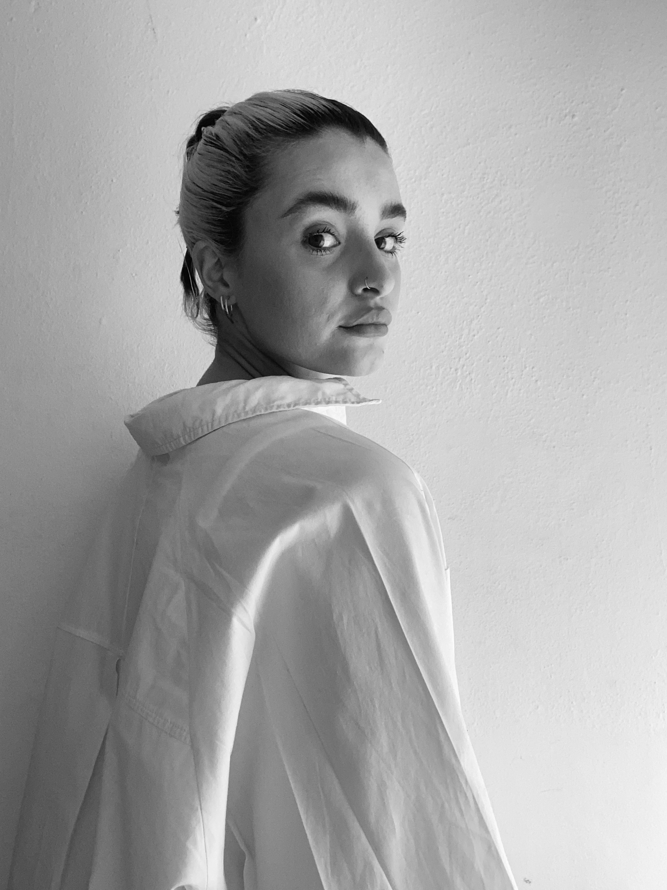

“At its core, my philosophy is rooted in cherishing life's simplest yet most powerful joys. I believe in celebrating those fleeting moments that often hold the greatest significance. By infusing my work with the essence of these experiences, I invite viewers to share in the beauty of life's understated pleasures, drawing inspiration from the universal languages of food, travel, and escapism, finding common ground that resonates with the human experience.”

Hi, my name is Gee!
I love learning about the world and connecting with others, through the lens of gastronomy travel and escapism. I am an avid cook and enjoy spending my free time exploring produce markets, reading cookbooks for escapism, and of course eating. Food and travel are evocative forces for the human experience, transporting us to different places and times, as well as generating powerful memories, emotions, and nostalgia. These themes form the basis of my artwork, encompassing a range of mediums, including illustration, printmaking, design and more recently ceramics.
Awards
- Isabelle spencer bursary award
- ‘Supported artist of the year’ awarded by the Sixteen Gallery (2023)